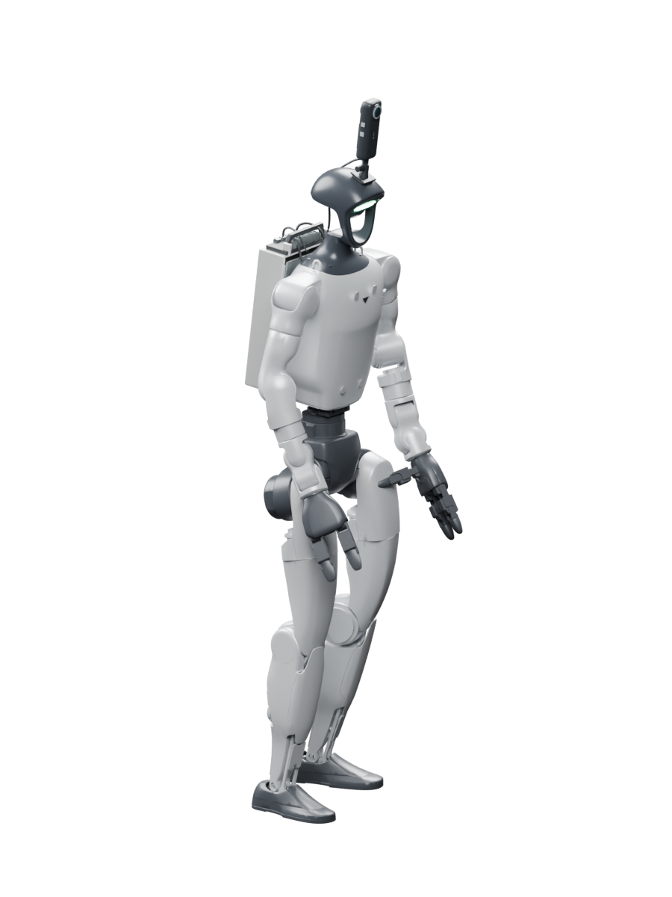

R2R
| Metric | Qwen-RobotNav 4B | ASENA-VLN 4B |
|---|---|---|
| Success ↑ | 66.9% | 68.7% |
| Navigation error ↓ | 4.22 m | 3.52 m |
| Path efficiency · SPL ↑ | 60.5 | 64.2 |
+1.8 points in success−0.70 m navigation error
Two systems that connect model reasoning to physical action—and turn the outcome into the next improvement.
ASENA connects a coding model to embodied tools, execution feedback and a persistent workspace.
ASENA connects a coding agent and persistent workspace to embodied tools. The agent can delegate navigation to a learned policy or construct motion proposals; execution authority stays with the platform.
Camera · LiDAR
Pose · joints
Interpret the task
Choose the computation
Call and combine tools
Goal + recent RGB
→ Navigation waypoints
Geometric waypoints
Upper-body joint targets
Independent checks
Operator approval
Whole-body control
Balance + locomotion

G1The deployment bounds the agent and its subprocesses. Motion passes through checks outside the agent, operator approval, and a controller that maintains balance.
Sixteen simulation workers start from separate copies of a shared workspace, develop reusable skills and retain execution feedback. Between passes, their improvements are merged into the shared workspace for the next round. All model weights stay fixed.
Distribute the updated notes and skills to the next pass.
Wₖ₊₁ = Improve(Wₖ, traces, feedback)Implemented in simulation: workers execute independently, inspect peer work and exchange tips through a shared bulletin. Between passes, consolidation merges, tests and prunes code and notes. This diagram shows logical instances, not a one-GPU-per-worker allocation.
ASENA-VLN is the optional navigation tool the coding agent can call. Evaluated alone, it reaches closer to the goal on both benchmarks. Success improves on R2R; RxR shows a tradeoff between trajectory fidelity and successful completion.
| Metric | Qwen-RobotNav 4B | ASENA-VLN 4B |
|---|---|---|
| Success ↑ | 66.9% | 68.7% |
| Navigation error ↓ | 4.22 m | 3.52 m |
| Path efficiency · SPL ↑ | 60.5 | 64.2 |
+1.8 points in success−0.70 m navigation error
| Metric | Qwen-RobotNav 4B | ASENA-VLN 4B |
|---|---|---|
| Success ↑ | 71.3% | 70.2% |
| Navigation error ↓ | 4.15 m | 3.90 m |
| Path efficiency · SPL ↑ | 61.5 | 59.7 |
| Trajectory fidelity · nDTW ↑ | 68.6 | 73.1 |
−1.1 points in success+4.5 points in nDTW
Reported policy-only results: ASENA, Table 1 ↗ and Qwen-RobotNav v3, Table 1 ↗. Both use monocular observations; training recipes, data mixtures and evaluation filtering differ.
Delegating navigation reduces tool calls for both coding agents. Success improves for Sonnet, while Astra trades some success for fewer interactions.
| Metric | Agent only | With policy |
|---|---|---|
| Success | 50% | 61% |
| Tool calls / episode | 103.83 | 38.91 |
+11 points in success62.5% fewer tool calls
| Metric | Agent only | With policy |
|---|---|---|
| Success | 93% | 86% |
| Tool calls / episode | 40.80 | 19.98 |
−7 points in success51.0% fewer tool calls
RxR Agentic Split, 100 tasks per configuration, before workspace evolution. Sonnet improves from 50% to 61% success; Astra drops from 93% to 86%. Tool calls are agent–tool interactions, not physical steps or elapsed time. Paper §4.3 and Table 3 ↗
Workers retained code, notes and tested skills between passes. Navigation success increased while the coding model, improver and policy weights stayed fixed.
Source: ASENA, Fig. 4 and §4.4 ↗; recorded navigation series reproduced from An-Chieh Cheng’s slide 12. Download plotted values (CSV).
| Pass | R2R + policy | R2R agent only | RxR + policy | RxR agent only |
|---|---|---|---|---|
| 1 | 72 | 60 | 65 | 48 |
| 2 | 79 | 70 | 70 | 57 |
| 3 | 86 | 78 | 68 | 61 |
| 4 | 91 | 89 | 70 | 68 |
| 5 | 90 | 93 | 70 | 70 |
| 6 | 93 | 94 | 78 | 74 |
| 7 | 95 | 93 | 80 | 77 |
| 8 | 98 | 95 | 83 | 79 |
| 9 | 98 | 96 | 86 | 80 |
| 10 | 98 | 97 | 89 | 80 |
ASENA records camera observations, measured robot motion and agent events in MCAP. The replay aligns the camera, joint states and body pose on the same clock, so an execution can be inspected after the run.
One recorded 10-second window: the camera, joint trace and body replay share the same clock. The rendered G1 follows measured robot states. The camera was recorded at approximately 2 Hz; repeated frames preserve its original timing.
upper_body(motion="yes_circle")A motion request from the snack mission, linked to its task context and execution record.
completedApproval authorizes execution. The task verdict is a separate outcome signal.
via: "voice"
user_content: "…"Accepted ASR text enters the agent event stream. This recorder does not store raw microphone audio.
The proposal and task verdict are recorded examples from a separate snack mission. Approval and speech fields show the interface structure; these cards are not synchronized events from the clip above.
Take the preceding camera observation and robot state, then measure the motion over the next two seconds.
Recorded interval: 582.5–584.5 sThese values come from recorded odometry and describe the motion that actually followed the observation.
The camera and measured-body replay come from deck-20260908-175129.mcap, bag time 579–589 s. The two-second motion example is a subset of that same recording. The separate snack-mission examples come from September 9; they are not labels for the walking clip.
The recorded channels include camera observations, robot state, control telemetry and agent events. Accepted voice text is logged in the event stream. The parallel simulation rollout pipeline is separate from this physical-robot recorder.
Paper §3.2 and Fig. 2 ↗ · Recorded-data walkthrough ↗ · Open the replay ↗
Possible reuse: curated real-robot recordings could later support SFT; an RL extension would use the simulation environment.
Next: Recova. Recova uses task and recovery experience to train manipulation policies that return to deployment. Explore the Recova tutorial ↗
Turn a failure that stops data collection into a skill that keeps the next rollout going.
Robots that keep collecting useful experience, with progressively less human intervention.
Reconstruct the scene so task attempts and failure recovery can be explored before returning to hardware.
Output: a reconstructed environment for task and recovery exploration.
The agent can diagnose, write a correction, test it, and try again. Successful programs become reusable recovery procedures and generate training data.
Contact and visual mismatch still need physical validation. New failure cases and human corrections expand what the system can handle next.
Twin trajectories initialize separate policies. Real DAgger updates happen between collection rounds; policy weights remain fixed within a round.
Monitor rollouts, coordinate recovery, request help when needed, and save experience to the appropriate data pool.
Autonomy improves by expanding recovery coverage. In one four-round tile-drawing study, human takeovers fell from 7 of 8 episodes to 0 of 7. Fully unattended, open-ended data collection remains the goal.
In the reported real-robot experiments, autonomous recoveries use the learned recovery policy. The coding agent develops and tests corrective programs in the digital twin; a new real failure can trigger a recovery instruction and a first human demonstration, followed by twin development, training and registration of the new skill.
The demonstrated loop is targeted failure recovery and separate policy improvement. A general agent that autonomously identifies every missing data regime, invents new collection tasks and trains indefinitely is a natural next direction, not an established result here.
Follow a real recording one turn at a time. Pause on a decision, inspect the program, then see the feedback that changes the next turn.
The adjacent programs and decision summaries explain the control flow; they are not verbatim private reasoning or raw execution logs. Each turn plays its selected footage and holds briefly for reading. Step controls let you inspect it without speeding up the recording.
Execute programs, inspect outcomes and retain useful skills.
Build the recovery loop that keeps embodied experience coming.